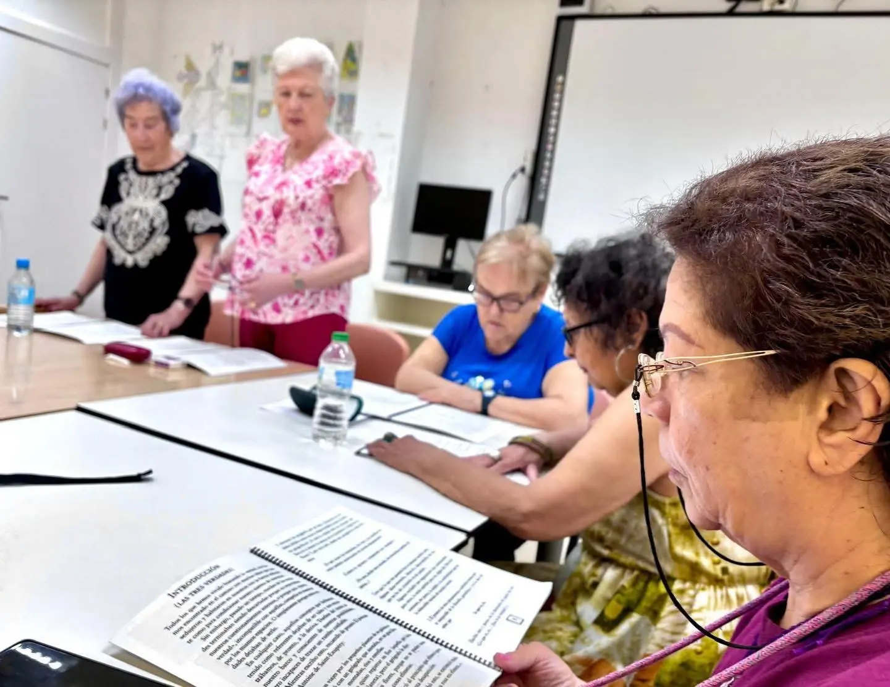

Logopedia
Evaluación e intervención en lenguaje, habla, voz, audición, deglución, lectoescritura y comunicación desde la infancia
Más informaciónConsulta nuestros servicios más habituales. Si tienes dudas, te orientamos para encontrar la intervención que mejor encaje con tu caso.
Evaluación e intervención en lenguaje, habla, voz, audición, deglución, lectoescritura y comunicación desde la infancia
Más información
Acompañamiento psicológico para infancia, adolescencia y familias, con intervención adaptada a conducta, emociones, auto
Más información
Orientación e intervención para menores con necesidades de apoyo en su desarrollo, coordinando logopedia, psicología, fi
Más información
Tratamiento fisioterapéutico para favorecer movilidad, postura, coordinación y autonomía funcional en la infancia y adol
Más información
Intervención para mejorar habilidades funcionales, autonomía, juego, alimentación, vestido, escritura y participación en
Más información
Trabajo especializado para ayudar a organizar la respuesta del niño ante estímulos táctiles, auditivos, vestibulares, pr
Más información
Refuerzo educativo para Primaria, ESO y Bachillerato con planificación, técnicas de estudio, seguimiento individual y gr
Más información
Clases de inglés orientadas a mejorar vocabulario, comprensión, conversación, writing, listening y confianza comunicativ
Más información
Intervención educativa para trabajar lectura, escritura, comprensión, razonamiento, organización y estrategias de aprend
Más informaciónAcompañamiento para crear hábitos, preparar exámenes, planificar tareas y estudiar con más autonomía y seguridad.
Más información
Información y acompañamiento sobre cheque servicio, ayudas disponibles, documentación y recursos para familias con neces
Más información
Orientación en becas ACNEAE, reconocimiento de discapacidad, dependencia, prestación por hijo a cargo y solicitud de pla
Más informaciónCada niño, adolescente y familia necesita una respuesta distinta. Cuéntanos tu caso y te orientaremos con cercanía.
Pedir informaciónDepende de las dificultades observadas. Podemos orientarte para valorar si conviene logopedia, psicología, apoyo escolar, fisioterapia, terapia ocupacional o integración sensorial.
Sí. Atendemos tanto a infancia como a adolescencia en áreas de lenguaje, comunicación, emociones, aprendizaje y hábitos de estudio.
Sí. Puedes llamarnos o escribir por WhatsApp para explicar tu caso y recibir orientación inicial.